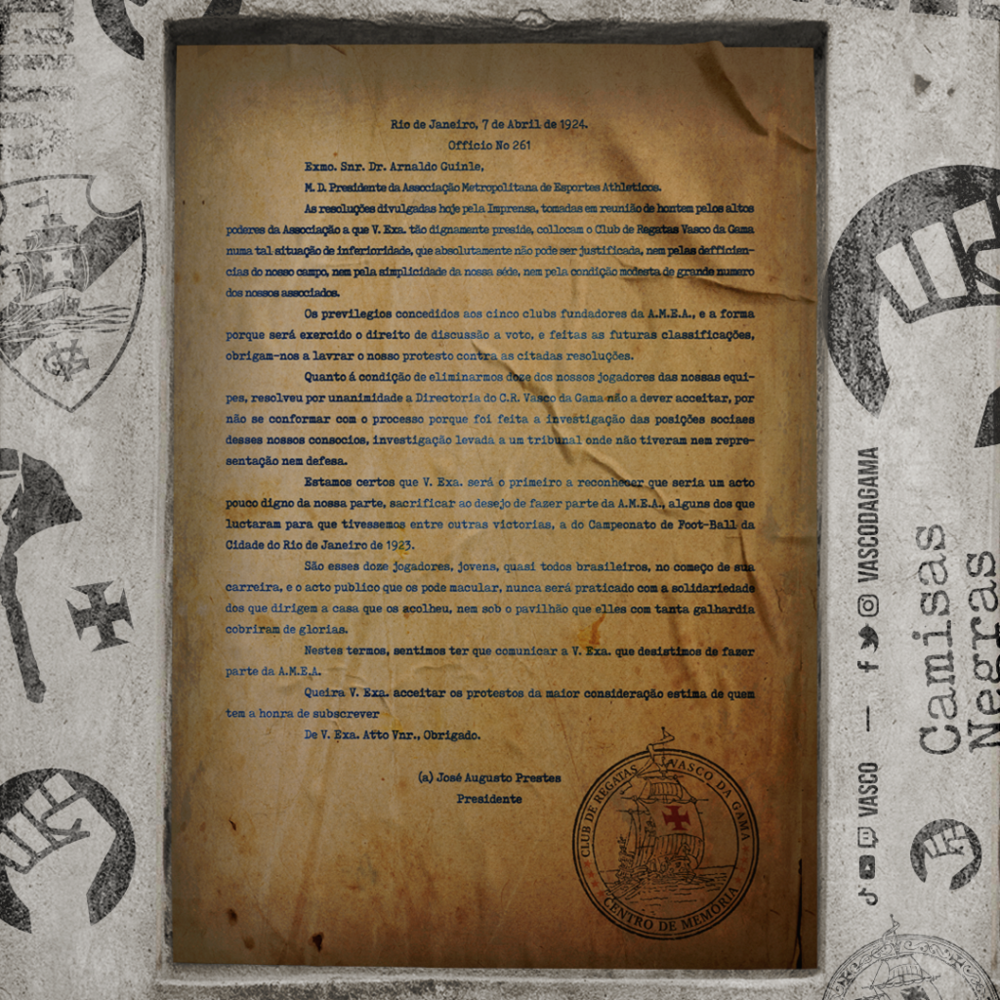
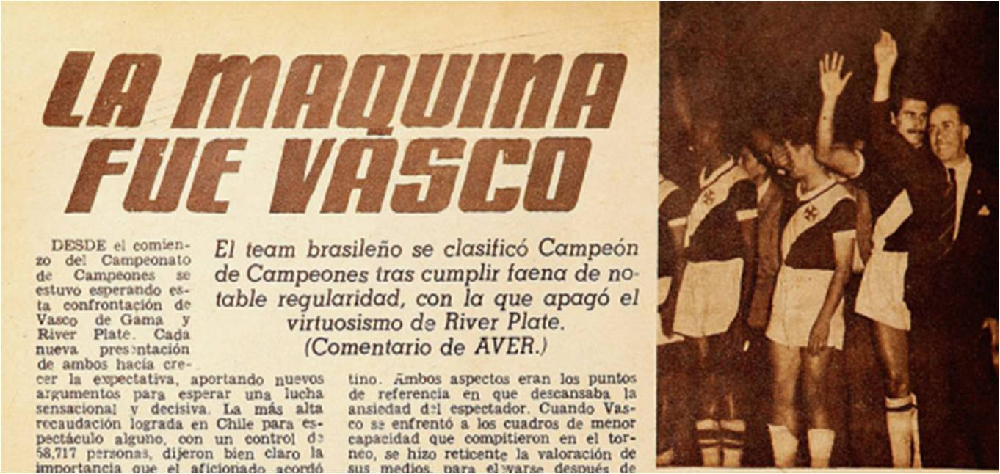
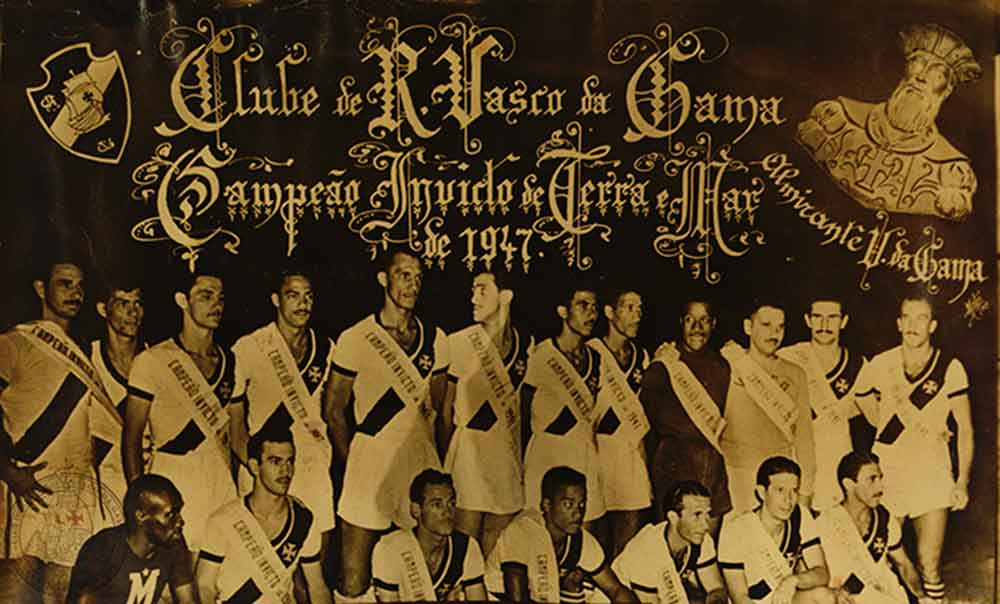

Um dos momentos mais marcantes da história vascaína ocorreu em 1924, quando o clube enviou a chamada Resposta Histórica à Associação Metropolitana de Esportes Atléticos. Naquele período, clubes da elite carioca como Flamengo, Botafogo e Fluminense exigiam que o Vasco retirasse de seu elenco jogadores considerados “inadequados” pelos padrões sociais da elite. O clube se recusou a aceitar essa imposição e defendeu seus atletas, afirmando que não abriria mão deles.
Essa atitude transformou o Vasco em um símbolo de resistência, inclusão e luta contra o preconceito no esporte brasileiro. A Resposta Histórica é lembrada até hoje como um marco contra o racismo e a discriminação social no futebol.
Assim, o Vasco da Gama não é apenas um clube de futebol. Ele representa uma parte importante da história social e esportiva do Brasil, sendo reconhecido por sua tradição, por suas conquistas e principalmente por sua defesa da igualdade dentro e fora dos campos.

O Campeonato Sul-Americano de Campeões de 1948 foi a primeira competição internacional de clubes de futebol da América do Sul, organizada pela Confederação Sul-Americana de Futebol (CONMEBOL). O Vasco da Gama, um dos clubes mais tradicionais do Brasil, participou dessa competição histórica e se tornou o primeiro campeão continental do mundo ao vencer o torneio.
O torneio contou com a participação de clubes campeões de seus respectivos países, incluindo o River Plate da Argentina de Di Stefano, o Nacional do Uruguai, o Colo-Colo do Chile e o Emelec do Equador. O Vasco da Gama se destacou ao vencer seus adversários e conquistar o título, marcando um momento importante na história do futebol sul-americano.

